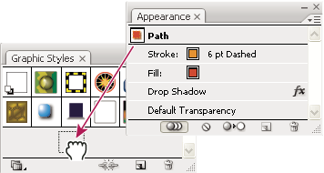

Create graphic styles
You can create a graphic from scratch by applying appearance attributes to an object, or you can base a graphic style off of other graphic styles. You can also duplicate existing graphic styles.
 Create a graphic style
Create a graphic style
- Do any of the following:
-
Click the New Graphic Style button
 in
the Graphic Styles panel.
in
the Graphic Styles panel. -
Select New Graphic Style from the panel menu.
-
Drag the thumbnail from the Appearance panel (or the object from the illustration window) into the Graphic Styles panel.
-
Alt‑click (Windows) or Option‑click (Mac OS) the New Graphic Style button, enter the name of the graphic style, and click OK.

Drag the thumbnail from the Appearance panel to the Graphic Styles panel to save the attributes.
-
Create a new graphic style based on two or more existing graphic styles
 Ctrl‑click
(Windows) or Command‑click (Mac OS) to select all the graphic
styles you want to merge, and then choose Merge Graphic Styles from
the panel menu.
Ctrl‑click
(Windows) or Command‑click (Mac OS) to select all the graphic
styles you want to merge, and then choose Merge Graphic Styles from
the panel menu.
The new graphic style contains all the attributes of the selected graphic styles and is added to the end of the list of graphic styles in the panel.